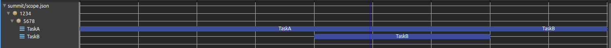
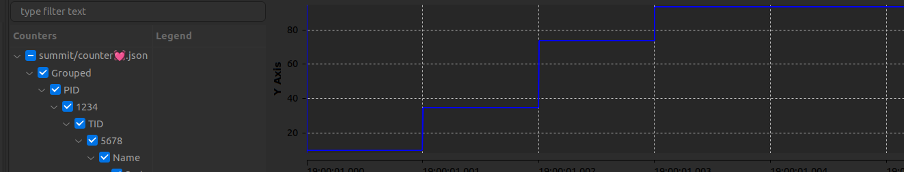
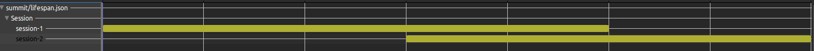
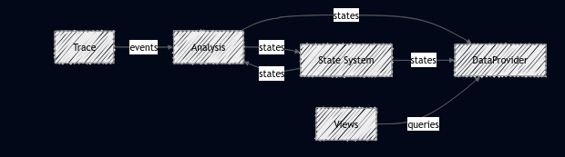
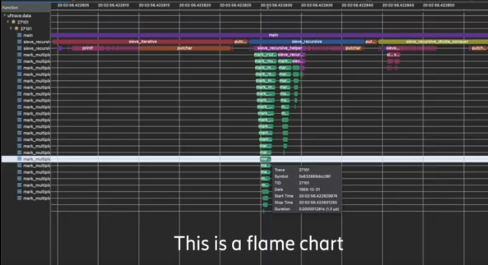
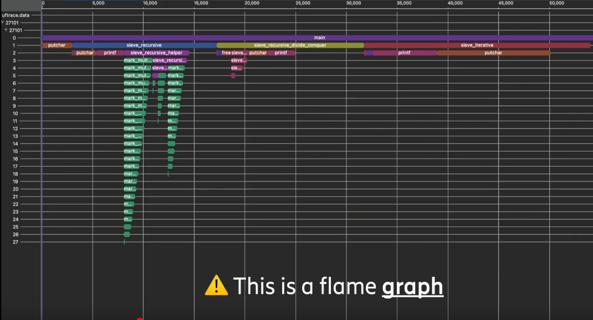
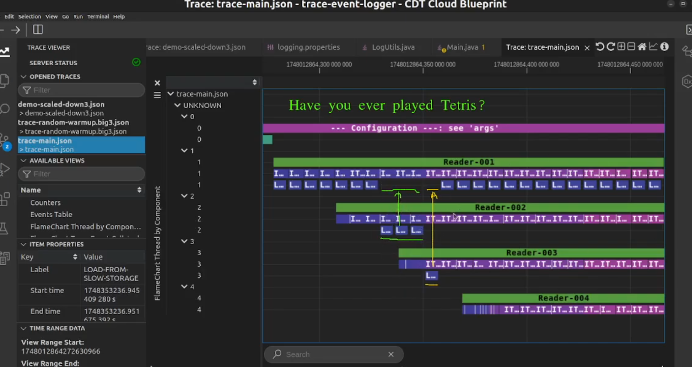
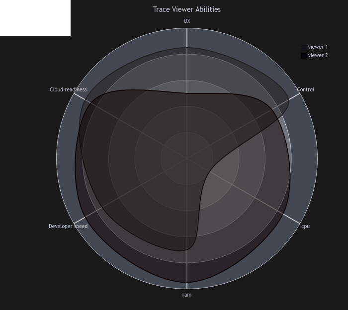

Cache Me If You Can
Diagnosing Cache Allocation Issues with Eclipse Trace Compass
(Trace Compass · Trace Event Logger · Linux Tracing Landscape)
Matthew Khouzam | Ericsson Canada | Tracing Summit 2025 (Thrilled to be here)
Problem Statement
- We explore cache size effects on performance & KPIs.
- Why do dashboards look green while the app feels slow?
- Tracing reveals hidden stalls & contention.
Deep Dive Tools
Trace Compass
- Rich visualization
- Cross-stack correlation
- Extensible analysis framework
Trace Event Logger
- Java-oriented tracing
- Lightweight, easy to integrate
- Inspired by UST, simpler DX
Who Am I?
- Tracing & performance enthusiast
- Contributor/Maintainer/Co-Lead/Product Owner to some open source tracing tools
- Experience diagnosing real-world performance issues
Ericsson & Tracing
- Active contributor to open tracing ecosystems for over 15 years
- Academic partner to Ecole Polytechnique Montreal and many industries
- Supports development of Trace Compass
- Internally used for software and hardware troubleshooting
- Helps industry adopt tracing in production
- Allows me to make the world a better place through FOSS
Linux Tracing Landscape
There are more!Kernel
- Ftrace
- LTTng Kernel
- Perf / eBPF
Userspace
- LTTng UST
- UProbes
- UFtrace
Java
- LTTng UST Java Agent
- JFR (Java Flight Recorder)
- Trace Event Logger
Visualization Tools
- Command Line: perf, trace-cmd
- Open Telemetry : High-level, great down to the uS!
- Perfetto : beautiful, web-based, Chrome/Android focus
- KernelShark : kernel views, scheduler focus
- Trace Compass : unified analysis
Trace Event Logger
- Designed for Java tracing
- UST-inspired
- Lightweight & easy integration
- Trade-off: fewer features than UST
| Type | View |
|---|---|
| Scope |  |
| Flow | 
|
| Counter |  |
| Lifespan |  |
Tracing Semantics
- Important to define what you trace
- Placement & granularity change results
- Avoid misleading conclusions from partial data
Trace Compass Design
- Modular architecture
- State system & analysis engines
- Extensible for custom views

Flame Charts & Graphs
- Flame Graph: aggregated profiles
- Flame Chart: time-aligned stacks
- Complementary perspectives


Example Project
A cache with many threads reading from it:
- Artificially constrained cache size
- Threads compete for cache access
- Performance seems fine at first glance
Deceptive KPIs
- Latency metrics: ✅
- Throughput metrics: ✅
- User experience: ❌ (super slow)
Tracing exposes the hidden story behind “green dashboards”.
Instrumentation Strengths
- Static instrumentation = always available
- Low overhead, high precision
- Minimal perturbation to workload
import java.io.FileWriter;
public class SlappyWag {
public static void main(String[] args) {
System.out.println("The program will write hello 10x between two scope logs\n");
try (FileWriter fw = new FileWriter("test.txt")) {
for (int i = 0; i < 10; i++) {
fw.write("Hello world "+ i);
}
}
}
}
import java.io.FileWriter;
import java.util.logging.Level;
import java.util.logging.Logger;
import org.eclipse.tracecompass.traceeventlogger.LogUtils;
public class SlappyWag {
private static Logger logger = Logger.getAnonymousLogger();
public static void main(String[] args) {
System.out.println("The program will write hello 10x between two scope logs\n");
try (LogUtils.ScopeLog sl = new LogUtils.ScopeLog(logger, Level.FINE, "writing to file"); FileWriter fw = new FileWriter("test.txt")) {
for (int i = 0; i < 10; i++) {
fw.write("Hello world "+ i);
}
}
}
}
Code Results
- Traces reveal delays at cache boundaries
- Clear visualization of synchronous stalls

The Cache Miss Story
- Synchronous cache misses = correctness intact
- But waiting destroys performance
- Tracing shows cause, not just symptom
Breather


Takeaways
- High-level KPIs can be misleading
- Tracing reveals hidden bottlenecks
- Cache effects must be contextualized
- Trace Compass + Trace Event Logger = deep insight
Questions?
Let’s discuss your own “good KPIs, bad performance” stories.